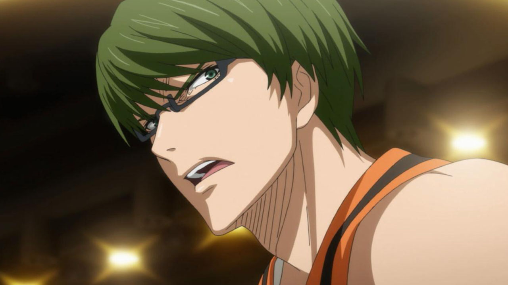
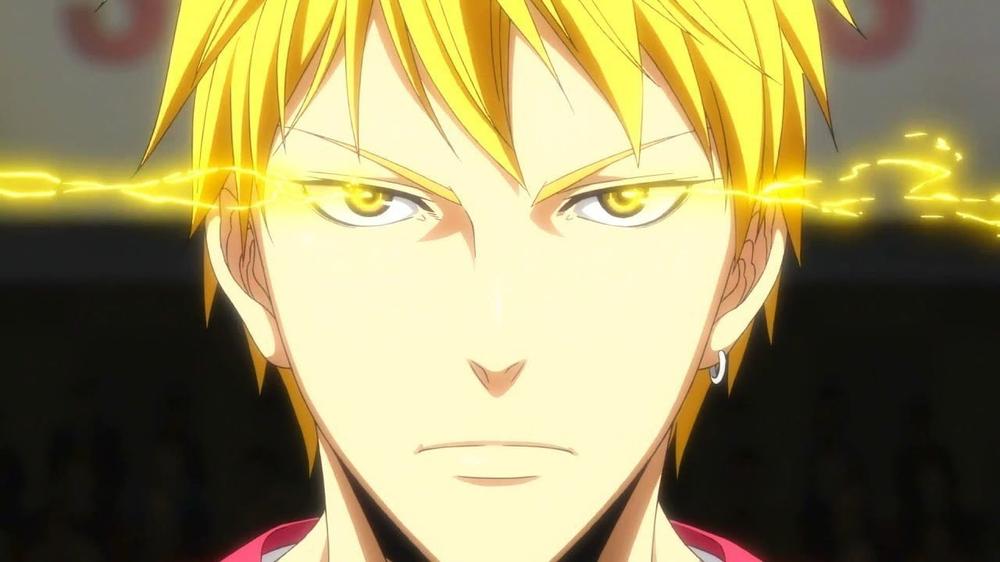

Мой личный топ персонажей в аниме "Баскетбол куроко"
1.Аомине
Поток.
Бесформенные броски (бросок с любого положения).
Скорость.
Его поток намного сильнее по сравнению с Кагами, поэтому он стал выше него намного.
Невероятно быстрый по скорости и с помощью Бесформенных бросков он умеет забивать с любого положения.
Кароче имба, не контрится
2.Акаши
Поток.
Глаз императора.
Коленоприклонство.
Вести в поток людей.
Неплохой игрок 1 на 1, идеальный капитан/командир, отлично оринтируется в пространстве
3.Мурасакибара
Поток.
Молот Тора.
Защита.
Из-за своего телосложения у него идеальная защита. Молот Тора наисильнейший данк.
4.Кагами
Поток.
Метеоритный данк.
Супер-прыжки.
Может долго находиться в потоке, в отличии от Аомине.
Единственный персонаж, кто смог быть на уровне с "Поколением чудес".
5.Мидорима

Супер дальние трехочковые
100% попадания.
Выносливость.
Невероятно сильный персонаж. По непонятным причинам его очнь сильно недооценивают и
даже не добавляют в некоторые топы. Обладает идеальным и сверхдальним трехочковым
броском со 100% вероятностью попадания
6.Кисе

Поток.
Копирование.
Идеальная копия.
Он способен копировать игроков, что позволяет ему комбинировать навыки других "Поколение чудес",
смог скопировать "Глаз императора".
7.Куроко
Незаметность
Глаз императора Куроко
Пасы
Добрый, позитивный, супер незаметный